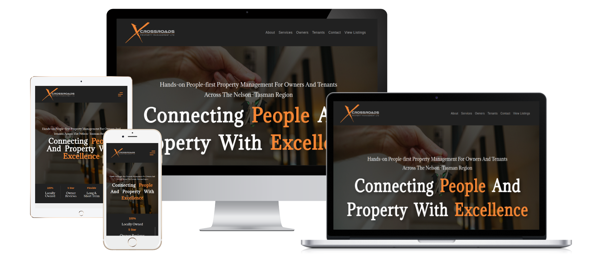
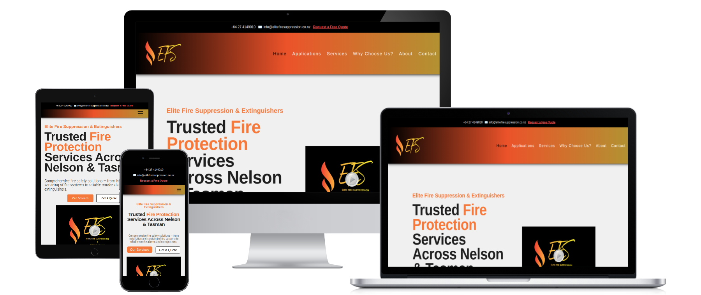
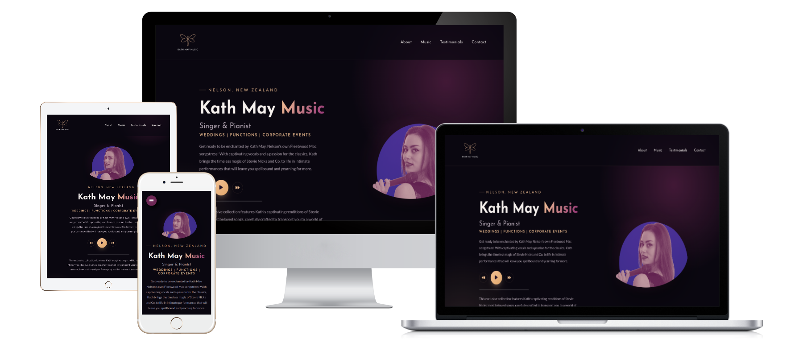
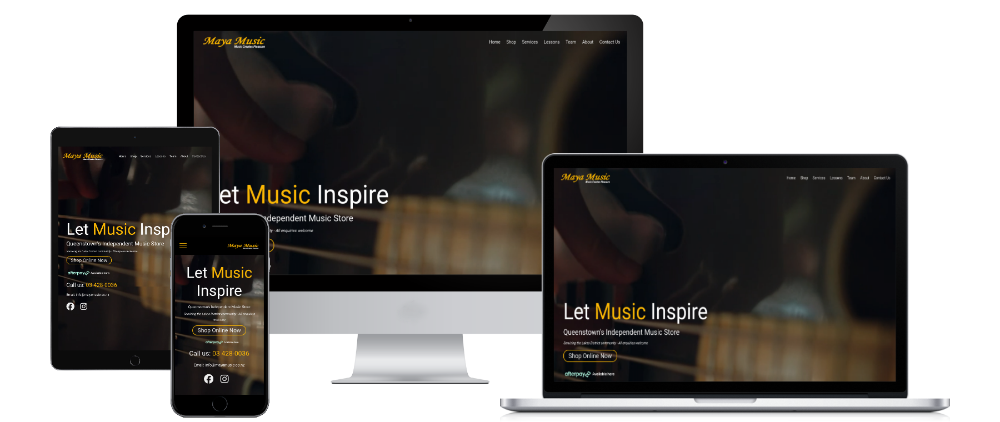
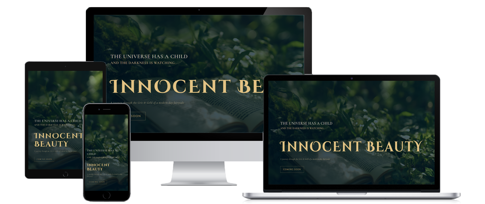
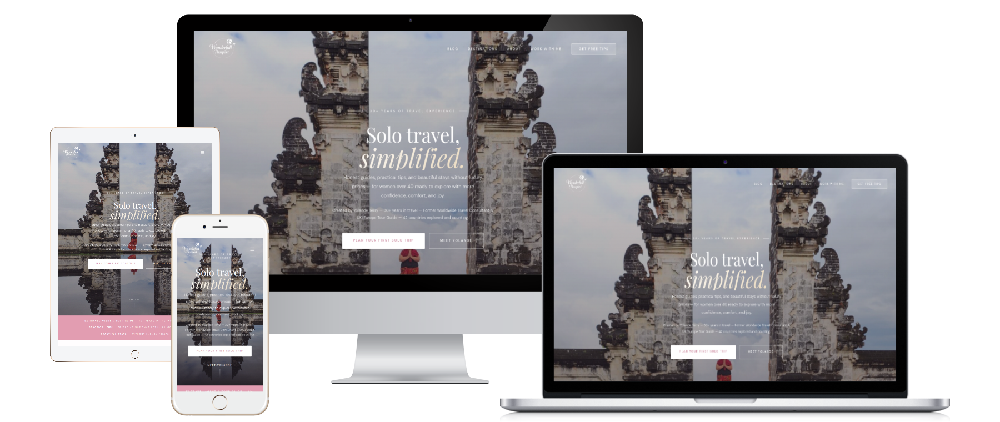

Property management · Website
Crossroads Property Management
A responsive website presenting property management services across the Nelson–Tasman region.
Our work
A selection of website projects for local businesses, creative people, and organisations—with each experience shaped around its own audience and identity.

Property management · Website
A responsive website presenting property management services across the Nelson–Tasman region.

Fire safety · Website
A clear, responsive website for fire suppression and extinguisher services in Nelson and Tasman.

Music · Artist website
A distinctive online home for Nelson singer and pianist Kath May, with music and performance details.

Music retail · Ecommerce
An online store experience for Queenstown’s independent music shop.

Beauty · Coming-soon page
An atmospheric coming-soon page with a modern fairy-tale feel.

Travel · Website
A travel website for women over 40, with practical solo-travel guidance, destination inspiration, and trip-planning support.